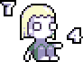
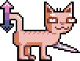
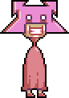
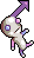
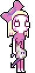

1. Noon
Blindness awakens. Richary Knowfield rises up alongside the same sun as yesterday. It hasn't moved, of course, and it probably never will. He sets his eyes on Pet and waits for the energy.
Her third birthday came by last week, and somehow it feels like a fresh era. Perhaps she can't handle silence, but at least she sleeps now. Sleeping is a healthy habit.
2. Spinning
Richary and Pet reach out into Blindness much like every day. It's a powerful town, because you can hear it. The horizon cries aloud and you can settle.
Pet knows the entire town. She talks to most of them on a daily basis, and she won't quit herself until the sun falls below her feet. She must have around a hundred different friends, but Richary never counts. He doesn't recognize most of them.
It's a breeze, at least for now. Pet can stimulate her own mind.
3. Trading Histories
Richary's memory only extends back far enough to barely lick the fog. It doesn't produce any details of his body's story. Four years ago, he woke up on the grass with a burn scar on his elbow and a good thirst for information. Nobody could tell him much.
Then he found Amery, and Pet popped into his arms. A fresh brain, like his own.
He teaches her everything he can. The world collects in his pockets, and he leaves a trail behind.
4. Messenger

During the walk back home,
Pet Knowfield learns about the Solar System. She presses the picture to her mind and it looks astounding. She wants to tell herself a story about it, but it won't come into form.
She thinks about Mercury for a moment and decides to love it. It feels physically near, even though to her knowledge she's never been anywhere close to there.
One topic leads to the next, and Richary mentions the periodic table of elements. Somehow Mercury comes back, but she doesn't like the number. She remembers 74 from somewhere, and Richary gives her the name: Tungsten. She actually shakes when she hears it.
5. Watching the Figures Form
Richary taught Pet how to count to a thousand recently, and it was substantial. She didn't know what a number was, so he drew them on a piece of paper. It melted her - she summoned them immediately.
The symbols came to her, and she fell into their arms. They didn't make sense before, but they were kind to her.
They were floating about, and always had been. Numbers in the air, moving across her eyes. They weren't numbers before, because she didn't know what a number was.
6. The Vocal, Excerpt 2
"Vocal Marole has always been attracted to the symbols. You, however, can probably not see them. They are vibrating above your head right now, but please don't look.
"The Symbol Man will find Vocal Marole and give her warmth with his body, but he cannot do the same for Young Vocal Marole. The symbols have been created for her purpose primarily.
"Vocal Marole will be flat and empty without the Symbol Man and all he contains. If she can unite with his symbols, she can shine like the sun."
7. 74°F
Dutom Twenty-five opens his eyes below a tree in the center of Felis Cactus. The temperature is climbing.

His favorite feline, who he has named
Catatone, steps up to his feet and warms his heart. Catatone's been an emotional worry for him, as his feet fall so weakly upon the ground, and it's never for certain he'll survive another night of this cruel outdoor world. He's only a kitty, after all.
But as Dutom's thoughts cross this topic, a finger taps his shoulder from behind and sends him spinning to find its accompanying face. It's a child with eyes.
8. New Pet
Dutom asks for a name, and receives "Pet." He introduces himself, but can't help himself from shaking. He holds Catatone so as not to lose his comfort object.
Apparently, Pet has found herself in this confusing world. Dutom gives her a brief Felis Cactus tour with his finger and encourages her to leave, but she continues with her nonsense. She asks him if he's "Mercury," which of course is barely answerable, so he leaves the question be.
He turns to Catatone and finds an idea. He passes the cat to Pet and gives a request - to keep it safe in some pretty shelter and entertain its mind - while gesturing her off into the distance with both hands and again pressing his initial "leave me be" request. She actually brightens up and accepts, somehow finding energy in the idea.
9. The Sun Doesn't Wait
Pet vanishes into the moist air with Catatone in her arms, leaving Dutom to wait for Temper.
It's been around three years since the first time he's stood there, waiting for the train to come and push him back into the active catastrophe of Weektime. And even now, he understands very little. Thinking about it only sparks his impatience. Time turns dark and firm.
The train arrives for him a few minutes later, and he pulls himself in. He turns to Happy Canning, who always seems completely ignorant of him. Every time he looks to her, he can't stop from escaping his boundaries.
10. Where Are You Going
The train stops at Weektime, and Dutom follows Happy through the town.
He always wears a clean red shirt when he does this. Through years of scrambling for hiding spots, he's observed her path and found an incredible number of red regions. Happy never looks anywhere but straight ahead, so he figures this small bit of camoflage to be enough.
It's very rare for her to walk to any other location than her house. She always relaxes by the same window, on the same couch, and stares into the wall. Dutom has placed this window show into his routine business. He usually brings The Vocal along and tries to fit himself into her life's picture.
11. One Billion Angels
Dutom figures himself to be the Symbol Man, described in The Vocal as "the inspirer and the receiver of all light and warmth," who "holds control of the symbols and basks in their rewards." He looks up to the numbers above and concludes, with his certiain head, that they are his symbols.
The symbols, as the book repeatedly mentions, are Vocal Marole's sole comfort and wonder. Happy Canning, then, will always fall to them, and her love will pour like his own. He can take these numbers and use them to his advantage. They will find her, hold her, and pass her to his arms. The numbers will hand him the day, and he will bask in their rewards.
And Happy, as The Vocal tells him, will "shine like the sun." She will be brighter than anything.
12. Talking Sweet About Nothing
Dutom has begun visiting a therapist. Things are getting difficult.

He did not choose therapy with his own mind - the therapist did. She approached him on the street with flowers, wishing to initiate something. Therapy, she said. You'll need it, she said. She calls herself
Miss Tame and wears a thick pink mask.
He tells her about Happy Canning this time. He's kept his mouth shut about the stalking up until now, but it's become worrying. Tame doesn't look shocked at this at all - her replies sound planned and polished, to the smallest, cleanest detail. Keep up with her, she says! Go deeper! Dutom doesn't exactly need any further pushing, but it still helps.
13. From This Angle She is Empty
Lista wants to buy an attractive birthday gift, but she doesn't have any ideas!
Happy's already covered in terms of clothes - Gerto-Patent keeps at least a dozen dozens of those (all identical, and about as pink as everything else he chooses) in her closet for day-to-day business, and he always keeps sure that she wears nothing but those.
Not much else comes immediately to Lista's mind; Happy is simply a bother to relate to, most particularly for somebody her age.
Lasset's suggestion is brief: don't waste your mind on it, she says. She presses her guarentee that Happy not only is free of desire, but she probably doesn't even know her birthday anyway. Though neither do they, frankly - it could have been a week ago for all they know.
14. One Eye in Both Worlds

At some point in the next hour - how lucky! - Lista finds a brilliant little doll on the top shelf near the back corner of Tuesday Toys. Lasset grabs it for her, though reluctantly, as she continues to dissuade Lista from forming any further attachment to Canning.
The doll is named, according to the tag, "
The Gazing Schiz." A very fitting birthday present, as Happy likes to stare forward in this very same way. The eyes have no traceable focus, and the arrow points out into a mystery location, perhaps a thousand yards from here.
15. Happy-Handed
Lista draws out a cute party invitation and copies it seventeen times for her classmates. She knows they'll accept it - they already know Happy Canning pretty well.
Last year, on Lista's birthday, they tried to test Happy by forcibly shaking her hand. They were very weak handshakes. Happy was quiet and emotionless for most of the party, but then Gerto-Patent shook her hand, and she smiled. It was wild, yet he didn't seem surprised; quite the opposite in fact, as he looked nothing short of depressed from that moment forward.
Happy hasn't smiled once since then, and at least from Lista's memory, she hadn't smiled once before that either.
16. Window Show
The next school day, Lista's friends confirm that The Gazing Schiz is a flawless present. It's just her style and color: a real matcher and a good watcher. Happy Canning once stood up from a stool, eyes put forward to the wall, and said nothing. It seemed a perfect time for her to say something, but she didn't say anything. Likewise, The Gazing Schiz always looks ready, like he could rise at any moment, by any trigger. And yet, he probably never will.
When Lista was done drawing her invitation the day before, Lasset suggested an addition. She wrote at the bottom, below all the rest, "don't get your hopes up" between a pair of parentheses. Lista didn't object. She frowned, but she didn't object, because it made sense.
17. The Weektime Young'uns
Lista holds the party on Saturday.
Her friends are still intrigued by the house, even now - pink and sunny, a good waver. Perhaps a static waver, but a sure one.
The children try to knock a few reactions out from Happy, but nothing satisfying happens. They give her just barely a needle's width of cake to test her, but retract it in guilt after she starts to eat it without question. They attempt some minor physical abuse, but quit rather quickly as it fails to work.
Lasset doesn't enjoy herself. Gerto-Patent doesn't seem to be around.
18. Another Fire
Later on in the party, Gerto-Patent comes down from the stairs - the first time showing his face that day - and takes Lasset's hand. Let's go, he says; we could both benefit goldly from getting out of here. They leave the others behind and drive off.
They have a few quick exchanges about meaningless things. After some silence, Lasset asks why it's necessary that Happy needs to live with them, being as depressing as she is. Gerto-Patent doesn't give any direct answer, but asks in return, what could be so depressing about her? Lasset replies with yet another question: if she doesn't depress you, then why are you distancing yourself from her right now? He doesn't say exactly why, but he definitely looks relieved without the pink stickers over his eyes, if that serves as any hint.
Lasset isn't sure that it's quite that simple, though. It can't just be the stickers.
19. Blunted

Happy Canning hasn't let go of The Gazing Schiz for even a moment since she received it.
She didn't look particularly enthralled by it at the party, not at first anyway. But she struck a kid in the neck a couple hours later when he tried to take it from her, so they figured there was something interesting going on there.
Strange thing about her quick violent outbursts: there's no perceivable emotion behind them. Nothing's really predictable with her.
20. Soul-Sapping Sunshine
Amery Knowfield tries to call up an old friend, but he doesn't answer. Not that it would make much a difference. She's been perfectly comfortable these past years without him.
Her daughter hasn't been a pressing matter - Richary's bond with her is much stronger, so most of everything falls on his lap. The majority of his days are pure improvisation. It's important that, since Pet's energy keeps her constantly ahead, the road must be prepared. But since she's so unpredictable, nothing can be too far pre-planned; the path must be crafted under every new step. This, again, is no concern to Amery, whose sole task today is to prepare for Pet's return, and thus keep the momentum going.
She puts down the phone and endures a brief surge of negative feelings. She likes it, though. She knows that she likes it. She has to like it. Negative emotions can always be appreciated, at some high level. Surely that must be happening now.
21. Eternal Return
The apartment has been feeling small recently. Amery knows that everything's alright though, because she can adapt. Without the burden of depending on things, nothing can be wrong.
She cleans up a bit and uncovers at least six inches of floor space. The floor looks just like the walls, which are full and exposed, though it feels much richer in value. It makes a clean path from the door to whichever direction. She takes notice of the door and moves a few heavy boxes away from their position beside it, recalling a day when she could once open it up completely without the obstruction.
She steps back to the door and catches a distraction. There has apparently been a record under the boxes all this time - the one and presumably only album put out by The Truth Ulcer. It was a present from her old friend from college, and it's apparently one of the only copies, if not the only copy in existence at all. She enjoyed it immensely back then, and she would probably appreciate it just the same today.
22. Soundtrack
Unfortunately, Amery doesn't have a record player, so she can't actually make use of the Truth Ulcer album. Her friend had one, but he took it with him when he dropped out. It was pretty convenient that he had one around in the first place - he never seemed to use it, but he always mentioned it. Those were some good days.
She puts the album aside and descends to work again, at her computer chair. She recorded some yucky sounding drums earlier - they sound almost like angry cushions - and now she'd prefer to do something silly with them instead.
So far this hasn't been a very effective way to make money. But it will be, soon. These cushions will play a part in saving her.
23. Not Pet
A little while later, Richary comes home with Pet at his feet. He's absolutely done. Today they spent about ten minutes at the mall, bought a rubber duck, fed some real ducks, went through a couple quick dissatisfying cycles around the elementary school playground, and stopped to talk to some of Pet's friends and their parents. Very lucky parents, those people. Calm, obedient children. Merciful lights.
He realizes that he can open up the door completely now. It gives him some kind of fake delight amid all this other business. He finds Amery at her computer at the other end of the room, doing whatever she does. She stands up, probably just to acknowledge him, then sits back down and puts her focus back where it was. Richary walks to her, paying special attention to Pet meanwhile, and gives a bit of a rundown.
Among other things, he mentions Pet's new name. She's been calling herself "Hallie Capital," and demands that she be addressed by this at all times. He makes sure to keep Pet in his sight as he explains this, switching back and forth between her real name and her made-up name as she moves in and out of earshot.
24. The Groove Clock
The apartment shakes, disturbed. Richary runs into the next room to check on Pet's safety.
She's been rolling across the carpet, into a wall, making this slightly concerning sound. Repeatedly. When he asks her about it, she mentions the cat. We're just playing! she says. It's Catatone - my favorite orange kitty cat, she continues. She talks about the cat's appetite, and its single metallic claw. Richary tries to distract her, but he can't think of anything to say. He asks what the claw is made out of - she responds, tungsten! It's a tungsten claw!
There is, of course, no cat. It doesn't exist. Now, this seems pretty cute, but he still feels strange about it.
25. Notes from Felis Cactus
Richary has a few stacks of paper in a drawer beside his bed. Amery handed them over only a few days after they first met. Details are written on their surfaces with various black pens - some events and concepts that try for his memory but don't quite achieve anything. He supposedly wrote it all himself, back in the days when he wasn't well.
After getting Pet all set for sleeping, he spends the remainder of the night in bed reading through the papers again. Amery doesn't show up; she's probably absorbed in something. There are still some questions she could answer, but she tends not to bring it up, and Richary feels the subject to be awkward himself. He can tell almost by the handwriting, and moreso by the drawings, that a good percentage of these were written in distress. Not something he wants to relive, if that's possible at all.
He flips through and finds the intriguing page: a wide mess of language on one side, and a scribble on the opposite side of a young orange cat named Catatone.
26. Escaping the Silence 4
The next day is only a notch above the previous. Not much changes aside from whatever subtle variance glides over him. His feet have probably morphed, adapting to the routine, but he would rather not check. Pet holds the day in ink across her two palms - spanning from 7 AM to 4 PM, those numbers being her personal choices - and time caves thin to her rigid eyes.
At the mall, she passes by her friends like they're dead cells and kneels before her madness; the numbers are done resting! she says. They're waiting behind the windows! Good range, too! 5 to 15, a sign of the best fortune! She runs through a door and shatters a window by accident. Richary stops in and pays for her unfortunate slip - quite a number more than the entirety of today's allocated money.
He decides to run her to the park and abandon her clenched schedule. Some children approach her; she screams at them for using the name "Pet" and not "Hallie Capital" as they should be. She storms off and spends the rest of the day following Catatone around, that sneaky kitty.
27. 75°F
Felis Cactus's climate continues to the sky, degree by degree. Its graduality can tease a human brain, but Catatone probably feels it. He ducks under a bush and ascends again, pressing forward to somewhere; little is he aware, Pet is close behind with her eyes.
He begins his initial divergence from the path - Pet's normal, familiar zone - and continues towards the distant mountains. Pet follows, though watchful. She takes a gander ahead, hoping to find numbers. Her breathing returns to normal: yes, there are numbers! They're lined up in spirals around the mountains. Patiently, perhaps? She takes another look. Are they waiting for her?
Felis Cactus is a very large place. She wishes to climb up one of those mountains one day, just to get a better look. Catatone doesn't seem to be planning anything vertical, but perhaps there will be another chance.
28. Dead Violet
Far beyond the mountains, the fog has gone.
There is a forest here. Catatone stops before it, and Pet follows with an equal stop. He continues again after a moment, but Pet doesn't. She stands and stares. This forest is black and done - flames have taken it away. It's old; it's history. There's some incredible guilt floating around here.
There isn't a cactus to be seen, and the cats have either perished or distanced themselves from this embarrassment. Felis Cactus has been hiding death beyond its mountains this whole time.
29. Catatonic Crater
Pet follows Catatone to a deep hole near the center of the forest. She hides on the opposite side of a tree to avoid being spotted.
Catatone punctures the soil with his tungsten claw on the hole's lowest point. He continues into it - there's a tall pile beside him, from past days. Pet makes her guess: this cat has been inefficiently digging his way to something for at least a few days now. It's so cute to watch that she almost squeals.
She wants to help, but it would be too risky. But she figures he'll be tired enough to leave eventually, and that will be her chance.
30. There's a Shovel in Richary's Closet
Pet wakes up after a few hours, still behind the tree, and finds that Catatone has already left the hole. She's not completely sure of how much time has passed, but it's not worth wondering about. As far as she can tell, there is no concept of time in Felis Cactus anyhow.
She picks up the process, digging with her arms into the ground, but it feels even more inefficient than Catatone's attempt. She tries again with some thick branches and then some tree bark, but it frustrates more than it helps, so she returns to her arms. The forest stares and taunts her, or at least it would be doing so, if it was alive enough for that.
This won't work. She comes upon a quick jot of anxiety at the thought of digging for a really long time.
31. The Vocal, Excerpt 3
"Typically, Vocal Marole won't ask much of those who ignore her - but if you must take her, then you must also make her. An angry father will kill her in anger and then reproduce her in guilt. It's expected.
"Vocal Marole cycles indefinitely as a pair of suns. The blue sun saps energy, and the pink sun gives it back. This pays some contribution to the cycle: an angry father, rich in the pink sun's light, will diminish to a guilty father at the peak of the blue sun.
"The blue sun will provide very little in terms of light, as warm and absorbant as it is. The pink sun will provide overwhelming light, but fall victim to blunted affect (a troubling lack of warmth and reaction)."
32. PP
Dutom has become rich in the pink sun's light.
Happy is far too cute to ignore. She's too much to bear! He's continued to watch her, day after day, and not much has changed. She has a doll now, though. It has an arrow pointing forward from above its eyes, and it's adorable, because she won't let go of it.
He's risen to obsession with her - her fixed gaze, and that distinctly complicated way her bare feet drag against the ground, as if painting a code across the path with her heels. He needs something defining to grab hold of, so that he can understand her more important patterns. Does she have a goal? Any fears? Who the hell is she? - or rather, who the hell is Vocal Marole?
33. Real Things
There is a pink shed on the top of a hill, close to Dutom's apartment. He knocks on its door every other day, because Ms. Tame expects him to do so. Though Tame doesn't live inside of the shed (her real home is about a mile down the road and up another hill), she's always present in time for the therapy session.
She keeps a desk cluttered with interestingly shaped and textured objects. She'll sometimes suggest this to him - she'll say, Dutom! tangibility is love! Tame seems very obsessed with tangibility. The first thing she did to him, before anything else, was touch his face. She's not blind, but, using her words: no other sense can be trusted.
She keeps a hammer under her chair, and sometimes she holds it. She loves its shape more than most others. This is something she brings up during every session, and its become easy to ignore.
34. Mover
Dutom talks to Ms. Tame about Happy Canning. That tall wonder, he says; her body is fixed in somebody else's choice, and never moves until moved. But she does twitch! Happy Canning absolutely twitches! he says. And he counts the twitches too, because they beg to be counted. He says all of this, and then he remembers The Vocal, and talks about that. He speaks, with confidence, about the Symbol Man. How lucky! he says; how lucky that I am the Symbol Man! Oh, how warm I would be to her, if I could only be with her.
Ms. Tame hears that last part and laughs for a full minute. She doesn't try to put him down, though. She reaches inside of a drawer in her desk and takes out a pink book - The Vocal, actually - and flips through the pages with her fingers. She enjoys that feeling, she says. You can feel almost every page. It's a ride.
Dutom's body straightens and freezes. She has it! She flips to the back page and gives him a quick gander.
35. Four Successful Days
The Vocal's back page is blank, except for the following two signatures, with parenthesized letter pairs written in by Tame:
(NN)
Hanna C
(RR)
Harriet Cylinder
(PP)
(LL)
Dutom takes a look. He grabs the book from her and doesn't talk for a few minutes.
36. Solid Desirable
Ms. Tame steps to him and gives her request: this new signature, she says, must be mine. And you will take it from her! She goes on about her interests in completing the page, and how much of a fan she is, but Dutom isn't listening. He's shaking.
No, he says. He refuses with his full face. Goodness, no! Tame softens her voice and asks, why? - Happy Canning is harmless, after all, she says. You have nothing to fear here, as people have done this before. What a sweetie, that Canning is! But Dutom keeps shaking. He doesn't want to hear any more of this. Oh, but Tame keeps pushing him: you say you're the Symbol Man? she asks. Well, this is what the Symbol Man does. He talks to her. Hell, he holds her! He wraps himself around her!
Now she looks angry about something. She picks up her hammer and holds it close.
37. Forehead Retribution
Dutom stops shaking, because he feels something interesting about Tame's anger. He asks what the signatures are really for, and Tame takes a long time to prepare her answers. Well! she says; Vocal Marole is important. You like her, right? Well, I do too. There's much to like.
Though still dissatisfied with this reply, Dutom accepts. Things seem to have changed in his mind. Tame calms and stands him up - she looks pleased. She hands him the book and gives some quick, fake praise. He asks how to go about this, and she gives him the phone number of a man named Gerto-Patent. Call him, she says, and he'll be very fine with it. She puts some major stress on the following point, though: she says, don't you dare mention me! I am not involved! You don't know me!
Before he can leave, she stops his feet. Here's a wild suggestion, she says: after you've both settled, try poking Canning above her left eyebrow. Just one poke, for your own satisfaction. Dutom waits for some kind of punchline - he's sure this is all humor. Tame continues: she's all yours, and you know it. You have the full right. Poke above her left eyebrow, and you'll see.
38. Easy Feeding of Forgetful Ears
Dutom waits until around 10 PM before finding the bravery to make the phone call. It's a surreal experience, carrying this out. Like jumping into a world oblivious to him.
A man's voice answers - it's very late, he says. Who is it? Dutom, says Dutom. The man gives his name, Gerto-Patent, and asks him why he could be calling at this hour. Oh! Dutom replies; well, I have something to ask. This is where Happy resides, am I correct? Gerto-Patent gives his confirmation that this is the case. Good! Dutom says; would you allow me to visit her tonight? For slightly important business? He retracts the word "slightly" - VERY important is what I meant! he says.
Gerto-Patent agrees immediately. Not tonight, though, he says: Vocal Marole is sleeping peacefully right now, and while she would not appear to mind the disruption, you can trust that she would in fact mind it. She does not express much, but please don't assume she does not feel much. Therefore, come in the afternoon, and we'll be set for you. Dutom agrees with this; he gives his thanks and hangs up the phone with triumph in his eyeballs. That's one less bit of social interaction to panic about.
39. Sunday 1
Lista wakes up at exactly 6 AM, as intended. Nobody will suspect it. Canning has business in the afternoon, so this has to be quick. She wakes up Happy and tries to give her comfort, but it isn't necessary. Happy never looks to need comfort.
We're leaving for a few hours, Lista says. And we're leaving before Lasset wakes up, because she worries too much. Happy neither agrees nor disagrees; she sits up on the side of her bed and stares through a wall. Lista pulls at her arm, and she complies to some degree.
They both leave the house.
40. Sunday 2
There's a statue in Weektime with a real head of hair. It's taller than every building in the town; people call it a "towering statue," and it earns that title by being a tall, sculpted human being every day of the week. There are exactly three guards here, standing in a group beside it. They protect it from threats that may or may not exist.
The statue is an unidentifiable person. Probably not anybody specific. On the bottom, a pair of letters has been carved with hands: ZZ. It's an old statue - probably has been around for as long as Weektime - and it doesn't carry meaning anymore. Still, the town likes it, so they protect it to an extent.
Lista and Happy pass by the statue. Happy squints her eyes and spots a dent above its left eyebrow.
41. Sunday 3
Lista's "plan" was a trip to the library, but this is something she has needed to do anyway. There's a bit of an insignificant school project going on that requires this trip, but it doesn't matter. This is only an excuse to have a conversation with Happy, in the end.
She pulls her in and finds a quick seat away from sight, even though nobody is actually around. Happy's eyes are open, but if she wasn't so much of a gazing schiz, Lista figures they wouldn't be. It's still early in the morning.
I'm sorry she isn't here, Lista says. My sister loves books, but it wouldn't work so well with you around.
42. Sunday 4
Lista talks to Happy about Lasset.
Lasset used to be happier, and she used to be brighter. Though Lista is too young to remember the best of it, Gerto-Patent tells good stories. Lasset used to look pleasant and easy, cute and dotlike. Her voice was a code of miniature puffs and young, high tones. This is what Gerto-Patent would say - he would talk about this in length when Lasset wasn't around, because he felt a bit awful about the whole thing.
If Lista had any good memories, she would go on and tell them. But she kind of doesn't. Oh, but Happy wouldn't care! She could never care!
43. Sunday 5
Happy Canning! Oh, look at that - oh, look at her! That hot reflector with its towering bow, and its head - faceless, still ice, refusing to keep its flame. Doesn't Weektime want that? Wouldn't it? Oh, typical! They can welcome her every day with those same open arms, but on Sunday they will be just the same as they were.
Who is Vocal Marole? She is a spherical energy sponge. She will steal light and give it back in excess. Weektime is The Pink Overlit: the positive, the anxious, and the angry. United by restlessness, they will either love Vocal Marole or wish her thorough suffering.
And Sunday is the day when it all clicks.
44. Sunday 6
The conversation about Lasset goes on, but Happy starts to look off.
Lista hasn't the slightest an idea what fashion of bullshit could have brought her to this library, simply to talk to Happy, who hasn't said or thought a single word. She puts her fist to the table and glares, but recieves nothing. She throws her book across the room and puts her face an inch from Happy's face. Then she laughs.
I wanted to adore you so much, she says, but where are you? Are you even sitting there right now? What are you composed of? Are you a rejection? Are you the premature output of broken genes? Could I dream of strangling those strands? If I can't end this, what can I end?
Happy doesn't say anything that matters. She scratches her hair and looks at the ceiling.
45. Sunday 7
Lista calms and picks up the book she threw. It didn't deserve that.
Her father and sister are going to be disappointed. They rely on her to be the happy one - and she was, until just a moment ago. Sunday is significant.
46. Entrance
Dutom knocks on the door to Gerto-Patent's "sun house/vocal home." Ms. Tame said it was an old place, and that it's been around for almost the same number of years as Weektime has. It was built for Vocal Marole, so that the Symbol Man could find her again and house her. That means, if it's to be assumed that Dutom is the Symbol Man, that one of his ancestors once owned the house and resided in it. Somehow, it's in Gerto-Patent's possession now.
Gerto-Patent answers, Dutom introduces himself, and he walks inside.
Vocal Marole is up the stairs, he says. Dutom nods and walks up the stairs.
47. The Color (Pink)
The trembling hurts. Dutom feels like his heart is spiked, and its eyes are bloodshot, and its tongue is bursting from the pressure of its teeth, and it beats and it curses and it keeps itself up. Happy Canning! She's so beautiful! All these years, he's been watching her, and telling himself stories, and here is her body!
Her room is so typical, and she looks so typical. Her closet is open, and there are twenty identical outfits inside of it. The bow is an exception - only one exists, on her head, just as he had guessed. Oh, and the smell, calm and straightforward; a dream smell, the kind of pillow aroma that translates into a rocket or a dinner or a planet or aging paper, whatever the context, accepted like any other external thing.
She's there! She looks up at him, and she has no expression. But it carries so much potential! Her cheeks are eager to expand to nature's whim - physics would allow that much, and then some, and then some more, as she could be the happiest in the world and her face would adapt in seconds. So perfect and soft - she is silent, restful; a bed sheet masterpiece.
48. What Does Mind Look Like?
Dutom almost forgets about the signature. He can't stand that request - it's so impersonal, just pen to paper. Now, skin to skin, that would be a satisfying signature. But he can't dive into that right now. He is here for a reason.
He opens to the signature page and hands the book to Canning, and also the pen he brought with him. She doesn't accept it the first time - it slides off of her lap and to the floor, as if it hasn't the right to even make contact. She gets it by the second attempt, and Dutom instructs her. His voice breaks into three different directions, then it joins for one burst, wherein he says: sign your name next to PP.
She stares at the paper for what feels like a few full minutes, then finally pulls her arm up to write. Such an elegant way to move an arm! Dutom tries not to touch her, but his mind has become a mess. He remembers something Ms. Tame suggested to him, and it comes up a few times. Oh, no no! Oh, no! Too much! But it's right there, it's right there!
Even with his hands tied in this emotional knot, they escape: with his full, focused strength,
he craters into the hotspot above her left eyebrow.
49. The Towering Pain
Happy falls back, dropping the book and the pen, and grabs her head with both hands. She was always very quiet, as Dutom's observed, but right now it's different. He hated that dull tone with his full face, but now he misses it, for now she has begun whimpering. It's a restrained whimper, the sound of a muffled puppy, and it isn't stopping.
I'm sorry! Dutom says, and then he says it again. He hopes his apologies will stop this. Happy's whimpers escape and grow into cries of a gradually climbing pitch. Dutom doesn't want to look at her, but his eyes do. He sees her for almost half a second, and by the worst luck, they make eye contact. Happy is there, kneeling on the floor, her eyes visible in the shadow of her hands. They're looking up at him now, in the most confused, innocent way. It's not anger. It's a child, born into a new world of physical pain.
Dutom shakes with a terrifying violence. He can't keep his feet on the ground. If he stands still, he will fall, and then he will be down there with her. He picks up the book, closes it, and runs out of the room. He closes his eyes for the rest of the way, even as Gerto-Patent tries to talk to him, and trips his way out the door.
50. Sun in His Brain
Dutom runs off for a while and hides by a tree. He considers himself lucky that he didn't get chased down or anything.
He opens The Vocal and takes a peek at the signature page. She signed it fully: Happy Canning, not a letter less. He wasn't expecting the handwriting to be exactly the same as Hanna C and Harriet Cylinder, but it is, and it looks nice. The letter pairs (NN, RR, PP, ...) are distinct from the other letters in a cute and consistent way.
Dutom looks at the final letter, G. At the end, he can see that it was interrupted. He starts to fight tears.
Curiously, the other two signatures appear to have been interrupted as well.
51. January
Richary tries to wake Pet, but she is already awake. She wants to go to Felis Cactus right away. He doesn't know what Felis Cactus is, but he read about it somewhere in his old notes. Unfortunately, he says, we can't go there, but we can go somewhere else! He had plans already: the usual stimulation, anything to numb her.
No! she says. Felis Cactus! I need to get to the forest before Catatone does!
Richary goes back to wake Amery. When she wakes up, he pulls her out. He says, this would be a good time for you to participate. Amery complains subtly. She runs to get her phone, and Richary takes it. Distractions, he says: whatever you've been doing lately, you're far too immersed, and your daughter needs you. Amery keeps her composure, but gives a few pleas.
Felis Cactus! Pet says. Richary asks what that is, and Pet replies: Felis Cactus is the purple section, on the border between this world and the other world. Richary temporarily calms her by saying, yes, we are going to Felis Cactus.
52. Somebody Feeling
Amery was told to wait on a phone call from West Artia, an old friend. He dropped out of college and disappeared into the sunset, started a few successful projects, and has risen to something interesting.
He seems a bit of a recluse, though, from her angle. This is why a phone call is such a deal: she hasn't heard his voice in nearly five years, and it seems almost as if he's been avoiding her. She feels like this might be her only chance, and that West would feel reluctant to try again on a later date.
Three weeks ago, he sent her some mail regarding a soundtrack to an animated film or somesuch. She didn't understand it at first because his writing style is ridiculous, but after a few days of piecing together the words in a meaningful way, she discovered that the music in question was being written by a woman named Amery Knowfield. She replied to the letter with confusion. In brief: she was, in fact, being paid to make music, for whatever reason.
So, yes, this phone call is rather important.
53. Active Patterns
Richary ran out of new ideas a while ago, so now he just cycles between activities.
The sun is glaring into surface foreheads. Pet tries to turn everything into a "number game" because apparently that will help with something. She says, Daddy! - over there, by the swing set, there are two threes and a one. What does that mean? Richary asks. She continues: two three-step groups, with a pause in between, and then one step, and we are at the swing set.
They give this an attempt; Amery tries to stay behind, but Richary takes her arm. Pet puts careful calculation into her steps and arrives at the swing set using the correct numbers. Richary just barely does so, but Amery fails due to a lack of interest.
Too bad, Pet says. But I can't get to Felis Cactus if you screw this up!
54. I See No Invisible Door
Richary asks about these "numbers." Why can't I see them? he asks. Pet says, I don't know, but I really love them! They're three-dimensional, and they float.
Richary asks what they have to do with Felis Cactus, and Pet says, that's where they came from! They came from Felis Cactus because they liked me so much! Oh, says Richary. So, if you follow their directions, you go to Felis Cactus? Yes, I think that happens! says Pet. But, she adds, I don't know what the directions ever are. I just go there.
Then, says Richary, how do you know that you're actually following directions? What if your Felis Cactus visits are random, and not triggered by anything?
Daddy! she says, disregarding the question; there are numbers on the slide now! A twelve, a two, and a nine. And there are six stairs - two sixes make a twelve, so I can walk up the stairs twice to knock out that twelve. Now, what should I do for the two and the nine?
55. Brute Force Euphoria
Amery is starting to panic. Any one of these minutes could be the minute that West calls. Richary wants her to stay, though, for some reason. He keeps telling her to talk to Pet, to influence her. Be sane, he says, and be you.
But this is good - it should be good, because these are emotions. All emotions are good.
She stands straight and talks as if there are no problems. And there really aren't any. After taking it all in, she joins in with Pet for a moment and suggests something different. How about we forget about this Feely Cactus stuff? she says. There are many fun things to do.
No! says Pet. And it's called Felis Cactus! You don't know anything!
56. The Vocal, Excerpt 4
"Vocal Marole will feel pain. She will be cut, bruised, burned, starved, and humiliated. She will spend days in silent misery under the ground, and she will turn to ash in a burning sack.
"And she won't remember it by her next rebirth. This way, it works out.
"Luckily, she has the Symbol Man to temporarily distract and comfort her. The Symbol Man will be actively incomprehensible, for her benefit, during her early years. It's about earning some gradual trust. He must be relied on, but not for any concrete reason.
"Later on, he will loosen up and let her die."
57. 77°F
Pet dashes across Felis Cactus to the dead forest, as if her legs are only ideas. She only just realizes that she's here, and not in some other place like the playground. There is no sequence of events in her brain.
She reaches the hole, which has grown. Catatone is in the center, just finishing up his job. He pulls out a fuzzy toy rat and a piece of paper. The rat is wearing the same orange color as Catatone, but the paper does not match at all. He turns around to discard it, and then he sees Pet.
There is a moment of silence somewhere around now. The toy rat sits firm in Catatone's mouth, and sends a signal to the claw on his left paw.
58. The Tungsten Claw's Flattening Massage
Catatone anchors into Pet's shoulders, throws her head open like a chest, and puts his tungsten claw to her phonograph brain. Catatone, the beautiful Groove Clock with his mouth full and his fur sticking up toward the sky, fastens himself in and begins his repetitive effort. He plays the same thought once and then twice, and then continues with this.
Pet struggles, but slowly stops attributing the problem to Catatone. She had a threatening thought earlier that day, as one might have. It was a quick, harmless thing - an instrusive thought, a passing image, that she shook off as any person would do. Now, though, Catatone is repeating it. He has found it, and he has locked into it.
It's like a whisper that grows with repetition; an echo reversed.
59. That That That That That
Richary asks Pet where the numbers are now. She looks around and doesn't say anything. There is something happening in her eyes - a relaxed terror, or hollow pain. She moves her eyes about, trying to find something. She turns to Richary and Amery, no eye contact at all, and says: let's go somewhere else, right now. Please, right now.
Of course, Richary says. He grabs Amery by the shirt to shift her attention over. She's been looking off for a while. He tries asking about it, but she denies that there's any issue.
They cycle through the rest of the playground once more, then move on to some other places in the town. Pet starts to talk strangely at the mall. She wants to do something new, or else she is going to hurt somebody. I need to hit you, Daddy, she says. I'm going to hit you if we don't go somewhere else. I'll hit Mommy too, I think. I'm sorry.
60. Surrender
Richary has never heard Pet say anything like this. Though knowing the consequences, he halts and refuses. What's wrong with you? he asks. You're ridiculous. You didn't mean that. He nudges Amery; she gives a quick "yeah" and looks off.
Pet means it. She says so. I want to go somewhere, she says. But, Richary responds, we already are somewhere! And I refuse to do anything with you if you're going to talk about hitting people. We can go home right now and you can sit in silence.
Pet starts to mildly spaz. Her eyes don't pick up, but she shifts with casual desperation. She opens and closes a few doors around her. Richary tries to calm her, but she resists and strikes his leg. This delays him by half a second, in which Pet ascends to madness and full-out attacks him. The force of these attacks surprises him; Pet looks calm, even bored, but her fists carry winds. The blows hurt.
Richary shouts to Amery, who comes to help restrain Pet. What's going on? Amery asks. She looks to have escaped from her distraction. Richary wants to ask the same question, but he's begun to be afraid of the answer. Pet continues to fight against their force, but after a few minutes of struggling her episode ends.
61. The Illness and Its Pointer Finger
Amery asks again: What's going on? What was that?
Pet looks up at them. So, what are we doing now, Daddy? she asks. Why do we need to be here anyway? I was fine at the playground. We didn't need to leave.
Richary stares at her. He's lost the ability to put force into his words. Pet, he says, that was an act of an animal. Do you think I'm going to let you do anything now? We're going home. Pet looks around, confused. I'm sorry, she says. I want to go to the playground.
Richary goes on, suspecting something: he says, Pet - er, Hallie Capital - I want you to tell me what you did wrong. She waits a moment. I screamed at you, she says. I'm sorry. I don't want to go home. Richary continues to stare. Thing is, Pet did not scream once during that episode - she was silent. She could be lying, but it doesn't seem that simple.
62. Decline
Amery does not receive a phone call at any point after arriving home. She stands the phone up on her desk and waits until after midnight, but nothing happens. It seems safe to assume that she missed West's call. Okay. This is somehow fine. She knocks on her chest, as if to invite emotion. Anybody home? Nope. She sighs and goes to bed.
Richary looks over his old notes. The papers are out of order, so he can't follow the words. There is a cactus drawing covering half of a paper. He flips through a couple more. There's a drawing of a burning forest, and some explanation:
"It's gone now and I'm sorry about it. I'm not angry anymore, just sad. I need to tell Vocal Marole something, but I can't bear to talk to her, so I will leave a note underground for the next one. Sharper gave me this shovel, and I never used it, as I'm sure she has found out."
Complete gibberish. He sighs and goes to bed.
63. Wednesday Rises
At some point after they went home, Pet managed to go back to Felis Cactus - avoiding Catatone at all costs - and pick up the paper that he discarded by the hole. She doesn't have the paper with her now. She's lying in bed, at home. It may have been a phenomenal note, but she couldn't read it, so she left it.
On her way home, she came into eye contact with Catatone again. She ran for her life until it was all over.
That toy rat was terrifying. Catatone probably still has it, waiting to attack again. He is dangerous with that toy. Pet isn't sure what happened, but it's starting to pain her. There's something about this world that she doesn't understand, something that she isn't eager to find out.
The numbers are calming, though. They're hard to understand, but they comfort her, and she trusts them.
64. End of Introduction
The Gazing Schiz points his arrow to the sky. He feels stuck, and he wants to escape.
Which of these worlds really exists?